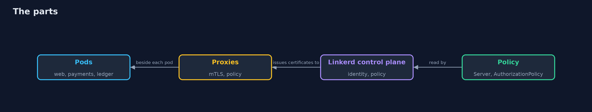
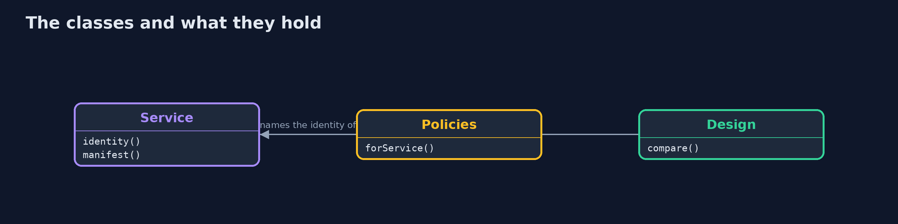
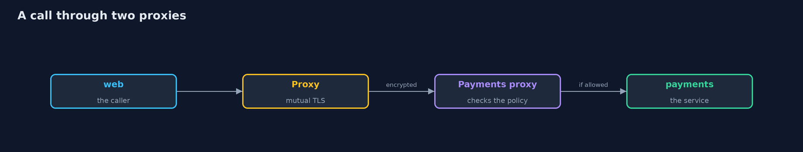
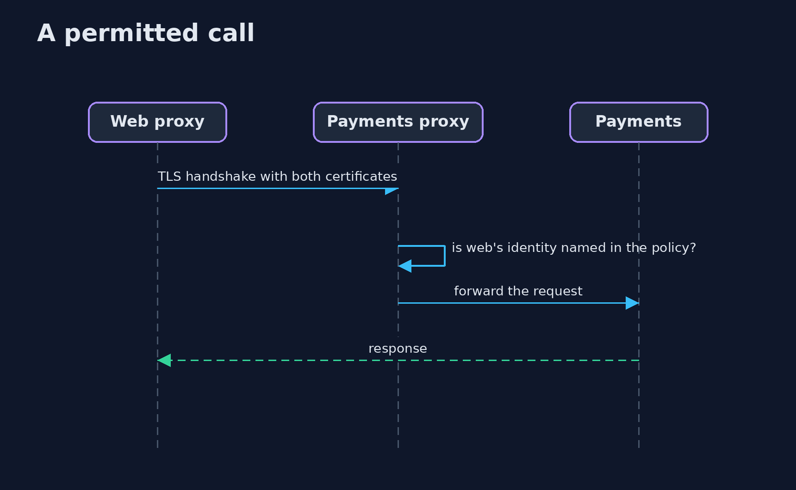

Service Mesh and Automatic mTLS
src/main/java/com/jk/explore/security/meshmtls/
├── CertInfo.java What a workload certificate says: who it names and for how long it is valid
├── Cluster.java A real Kubernetes cluster made by kind (one node, itself a container), with its own kubeconfig file, deleted on close
├── Design.java Which workload may call which, as the design says, and a measured matrix compared with it
├── Lab.java The bank's workloads on a real cluster with Linkerd installed, and the measurements of who can call whom
├── Linkerd.java The Linkerd release the demo uses, downloaded from the project's own GitHub releases into build/ the first time
├── Metrics.java Reads a proxy's own counters (Prometheus text) and sums one counter by the identity on the other end of the connection
├── Policies.java Linkerd's policy objects: a Server names a port of a workload, an AuthorizationPolicy says which mesh identities may use it
├── Service.java A workload of the bank: the namespace it runs in, its name and the ServiceAccount its pod runs as
├── ServiceMeshMtlsDemo.java
├── Sh.java Runs a program and returns what it printed, whether it worked or not
└── Sniffer.java A packet capture run beside the cluster's node (sharing its network and process space), the way someone with root on the node would
On a real kind cluster with Linkerd (edge-26.10.1), a call from web to payments shows the account number on the wire before the proxies (yes) and not after (no), and each proxy counts the other end by certificate: payments sees web.bank.serviceaccount.identity.linkerd.cluster.local, web sees payments, so both ends proved who they are; all 4 workloads hold a certificate named from their ServiceAccount; with mutual TLS alone 16 of 16 caller and service pairs answer (14 unwanted, 4 of 4 from a pod outside the mesh, and the node itself gets HTTP 200); a Server and an AuthorizationPolicy per service leave exactly the 2 designed pairs (2 of 16, 0 unwanted, 0 missing) and refuse the others with HTTP 403, including the pod outside the mesh and the node; the mesh still lets an allowed web send an injection string through intact, shows the account number to root on the node between the proxy and the app, leaves a call to a pod outside the mesh readable, and gives a new pod that runs as the payments ServiceAccount payments' access (HTTP 200) while a ServiceAccount of the same name in another namespace gets 403; a certificate issued for 5 minutes (Linkerd's default is 24 hours) is renewed with the same name and no restart, and the trust anchor is valid for 365 days.
A service mesh puts a proxy beside every pod. The proxies get a certificate for the pod from its ServiceAccount, encrypt every call between them and check each other's certificates, with no change to the application. This project installs Linkerd (release edge-26.10.1, downloaded from the project's GitHub releases into build/ the first time) on a real kind cluster and measures a bank's pods before the proxies, after them, with a policy, and where the mesh stops. A Java program drives kind, kubectl, the Linkerd CLI and a packet capture; the demo is tagged integration: ./gradlew integrationTest (Docker, kind, kubectl and a network once).
What it shows:
- Before and after. A call from web to payments carries the account number in clear on the wire, then not at all once the pods have proxies; each proxy counts the other end by its certificate.
- Identities. All 4 workloads hold a certificate named <serviceaccount>.<namespace>.serviceaccount.identity.linkerd.cluster.local.
- Mutual TLS is not a decision. With no policy 16 of 16 pairs answer, 14 of them unwanted, including a pod outside the mesh and the node.
- A policy. A Server and an AuthorizationPolicy per service leave 2 of 16, the designed pairs; the others get HTTP 403.
- What the mesh does not protect. An allowed caller can send any request; root on the node reads the plaintext between the proxy and the app; a pod outside the mesh talks in clear; whoever may create pods may take a ServiceAccount's identity.
- Lifetime. A certificate issued for 5 minutes (default 24 hours) is renewed with the same name and no restart.
Maps to: NIST SP 800-207 (zero trust) · NIST SP 800-204A/B (service mesh) · OWASP ASVS V9 · CIS Kubernetes Benchmark 5.
The idea in everyday terms
A building where every employee wears a badge printed by security from their HR record, and every door has a reader. The badge is only as good as who may order one, the reader only works on doors that have one, and a guard who stands inside the room still sees what is said there.
The scenario
A bank's web front calls payments, and payments calls the ledger. A statements service and an older batch job sit nearby. The demo measures who can call whom, with and without the mesh.
Run
./gradlew run
The demo tells the story in 5 acts, each printing exact numbers that the tests check:
| Act | What it shows |
|---|---|
| 1. Before and after the proxies | The account number can be read from the wire before the proxies and not after; each proxy counts the other end by certificate. |
| 2. Identities from ServiceAccounts | All 4 workloads hold a certificate named from their ServiceAccount, namespace and trust domain. |
| 3. Mutual TLS is not a decision | With no policy 16 of 16 pairs answer, 14 unwanted, including a pod outside the mesh and the node. |
| 4. A policy names who may call | A Server and an AuthorizationPolicy per service leave exactly the 2 designed pairs; the rest get HTTP 403. |
| 5. What the mesh does not protect | An allowed caller sends anything, root on the node reads the plaintext, and a new pod can take an identity. |
Test
./gradlew test
15 tests in CertInfoTest, DemoRunsTest, DesignTest, MetricsTest, PoliciesTest. The identity names, the policy manifests, the counter parsing, the certificate reading and the pair scoring are tested with no tools. The demo needs Docker, kind and kubectl (./gradlew integrationTest).
What the simulation got right, and what it left out
Linkerd, kind and the packet capture are real and run on your machine. The bank is made up: small web servers stand in for the services. The demo prints counts, names and yes or no, never pod names, addresses or certificate serials.
Technologies and versions
Every version below is pinned in the project's build files and was the latest stable release when the project was built.
| Technology | Version | Used for |
|---|---|---|
| Java | 25 | the language and runtime; a Gradle toolchain finds or downloads the JDK |
| Gradle | 9.8.1 (wrapper) | build and run; nothing to install, the wrapper downloads it |
| org.junit.jupiter:junit-jupiter | 6.1.3, set by junit-bom | JUnit 5: the tests (tests only) |
| org.junit.platform:junit-platform-launcher | 6.1.3, set by junit-bom | JUnit platform launcher, which Gradle needs to run the tests (tests only) |
| videokit | repository tool (tools/videokit) |
the narrated video and animation: Piper en_US-amy-medium, speed 0.8, longer pauses (the amy-slow voice) |
Learning Material
| Document | What it is for |
|---|---|
| Problem statement | the situation and what the project must show |
| Prerequisites | what you need to know first |
| Service Mesh and Automatic mTLS, explained | the acts in prose |
| Session guide | a one-hour lesson with exercises |
| Animated walkthrough | the acts step by step, narrated |
| Threat model | what is protected, who could harm it, and how, using STRIDE |
| Spec | what this project must be true of |
| Expected output | the golden demo output every test and every port checks against |
The idea in one picture
Proxies in each pod, a control plane that issues identities.

Where each piece sits
A workload, its policy and the design it is scored against.

How the data moves
The proxies carry the call.

Who calls whom, in order

Video
video/service-mesh-mtls-explained.mp4 (with .m4a audio and .srt subtitles) is built by video/build_video.sh. Rendered media is not committed.
What it costs
- A proxy in every pod costs memory, latency and a control plane to run.
- Policy has to be written, or mutual TLS only encrypts.
- Certificates expire, so the control plane must stay up to renew them.
- Pods outside the mesh are not covered.
- The mesh trusts the cluster's ServiceAccount control.
When this is too much
A cluster with a few services and a team that already runs mutual TLS in the application may not need a mesh. A mesh pays off when many teams need identities and policy without changing every service.
Where you have already met this
- A security review that asks whether traffic inside the cluster is encrypted.
- A network policy that allows a whole namespace.
- A shared database password between services.
- A certificate that expired on a Sunday.
Where this sits
This is a project of the service-identity-and-zero-trust module, next to mutual-tls-between-services where the application does the same work itself. The cluster is the one of kubernetes-network-policies.